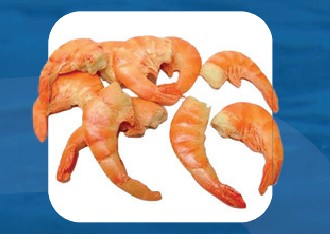
Camarão Rosa
Limpo, eviscerado com cola
ORIGEMNacional (SC)
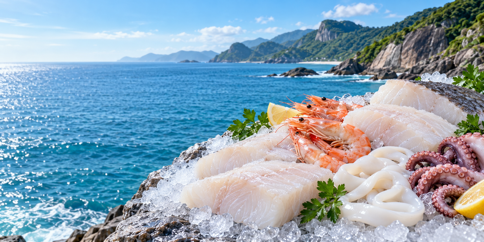
PESCADOS E FRUTOS DO MAR
Pescados, filés e frutos do mar para a sua mesa e o seu negócio. Uma seleção de sabores para cada preparo.
Fale com nossa equipe Conheça o catálogo ↓Variedade de pescadosPara cada preparo
Origens no catálogoConheça a seleção
Novas embalagensA identidade 4 Elos
Fale com a equipeConsulte disponibilidade
NOSSOS PRODUTOS
Variedade de espécies, cortes e origens para encontrar
o produto que combina com o seu preparo.
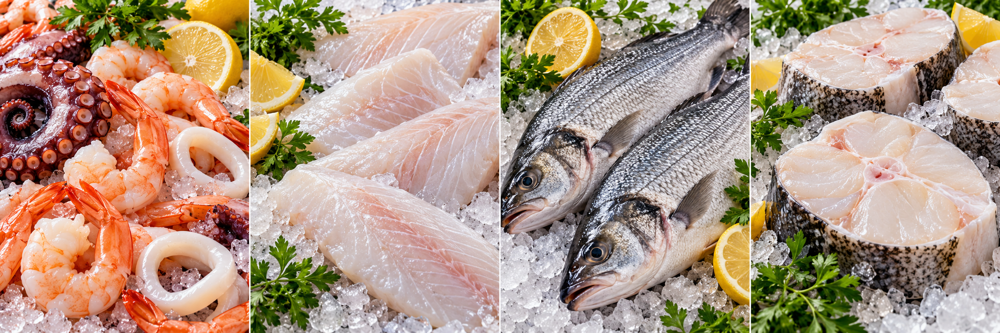
Camarões, polvo e lula
Praticidade para cada preparo
Espécies e origens variadas
Cortes para a sua cozinha
Imagens ilustrativas das categorias.
NOSSO CATÁLOGO
Conheça os produtos e suas origens.
Consulte nossa equipe sobre disponibilidade.

Limpo, eviscerado com cola
ORIGEMNacional (SC)
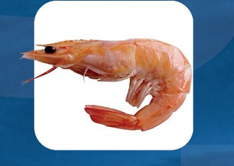
A granel ou bandeja
ORIGEMNacional (SC)
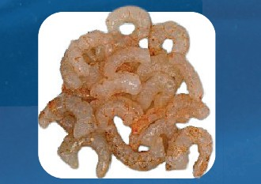
A granel ou bandeja
ORIGEMNacional (SC)
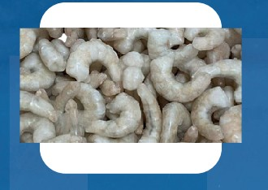
Limpo
ORIGEMCamarão de cultivo
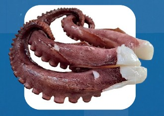
A granel ou bandeja
ORIGEMNacional (Nordeste)
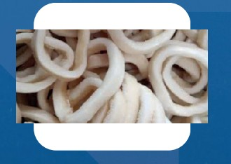
A granel ou bandeja
ORIGEMPeru e China
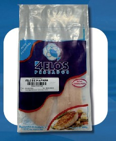
Pacotes
ORIGEMNacional
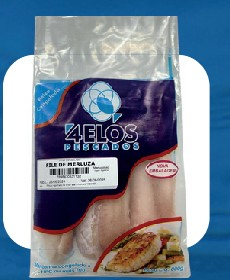
Pacotes
ORIGEMArgentina
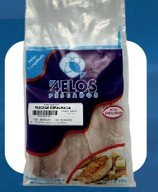
Pacotes
ORIGEMNacional
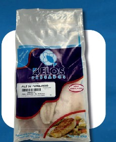
Pacotes
ORIGEMNacional
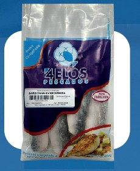
Pacotes
ORIGEMNacional
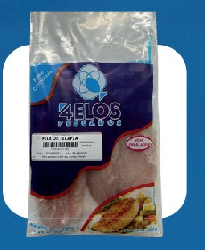
Pacotes
ORIGEMNacional
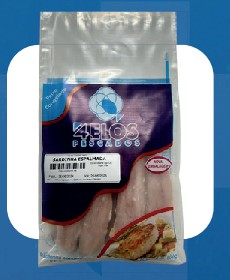
Pacotes
ORIGEMNacional
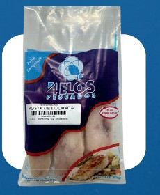
Pacotes
ORIGEMNacional
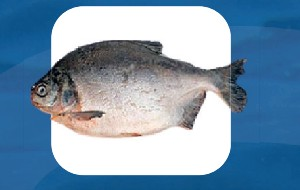
Variedade de espécies e origens
ORIGEMNacional (AM)
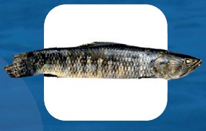
Variedade de espécies e origens
ORIGEMArgentina
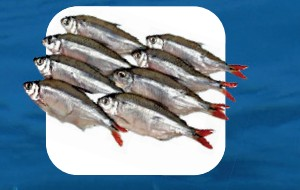
Variedade de espécies e origens
ORIGEMNacional (MG / PR)
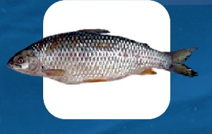
Variedade de espécies e origens
ORIGEMArgentina
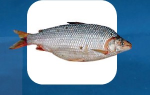
Variedade de espécies e origens
ORIGEMArgentina
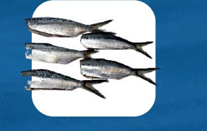
Eviscerada
ORIGEMNacional (SC)
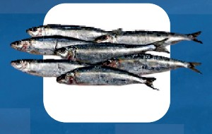
Variedade de espécies e origens
ORIGEMNacional (SC)
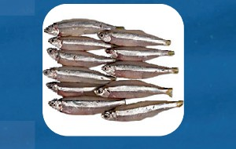
Variedade de espécies e origens
ORIGEMNacional (SC)
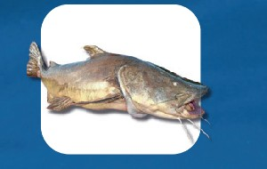
Variedade de espécies e origens
ORIGEMBacias Amazônicas
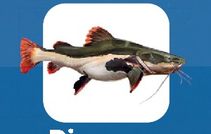
Variedade de espécies e origens
ORIGEMPará - PA
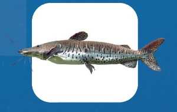
Variedade de espécies e origens
ORIGEMPará - PA
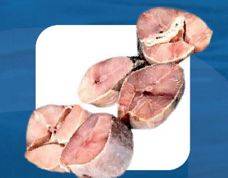
Com pele
ORIGEMNacional (PA)
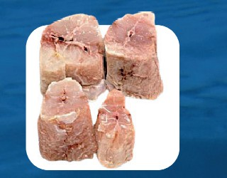
Sem pele
ORIGEMNacional (PA)
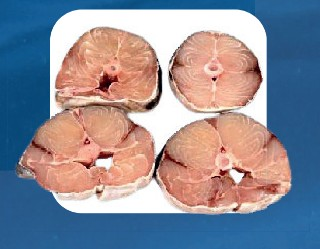
Com pele
ORIGEMNacional (MA)
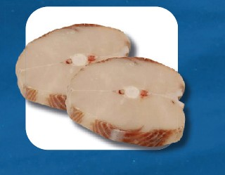
Cortes para diferentes preparos
ORIGEMArgentina
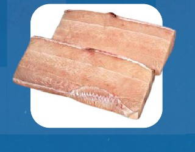
Sem pele
ORIGEMUruguai
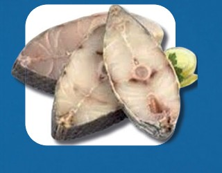
Cortes para diferentes preparos
ORIGEMNacional (SC)
SOBRE A 4 ELOS PESCADOS
Fundada em 1999, a 4 Elos Pescados foi adquirida em 2007 pelos irmãos Abraão e Fausto. A experiência no restaurante da família e o incentivo do pai deram origem a uma trajetória de dedicação à alimentação.
Em 2010, a construção de uma nova sede ampliou a capacidade de armazenamento. O catálogo destaca uma atuação em mais de 40 cidades.
Nossa meta é levar alimento saudável à mesa de todos os brasileiros.
Conheça nossa equipeCONEXÕES QUE FAZEM A DIFERENÇA
O cuidado que inspira
a nossa trajetória.
Uma história de família
desde 1999.
Espécies e cortes para
diferentes preparos.
Uma conversa direta
com a nossa equipe.
NOVA APRESENTAÇÃO
Conheça a apresentação dos produtos destacada no catálogo. A identidade da 4 Elos Pescados acompanha cada pacote.
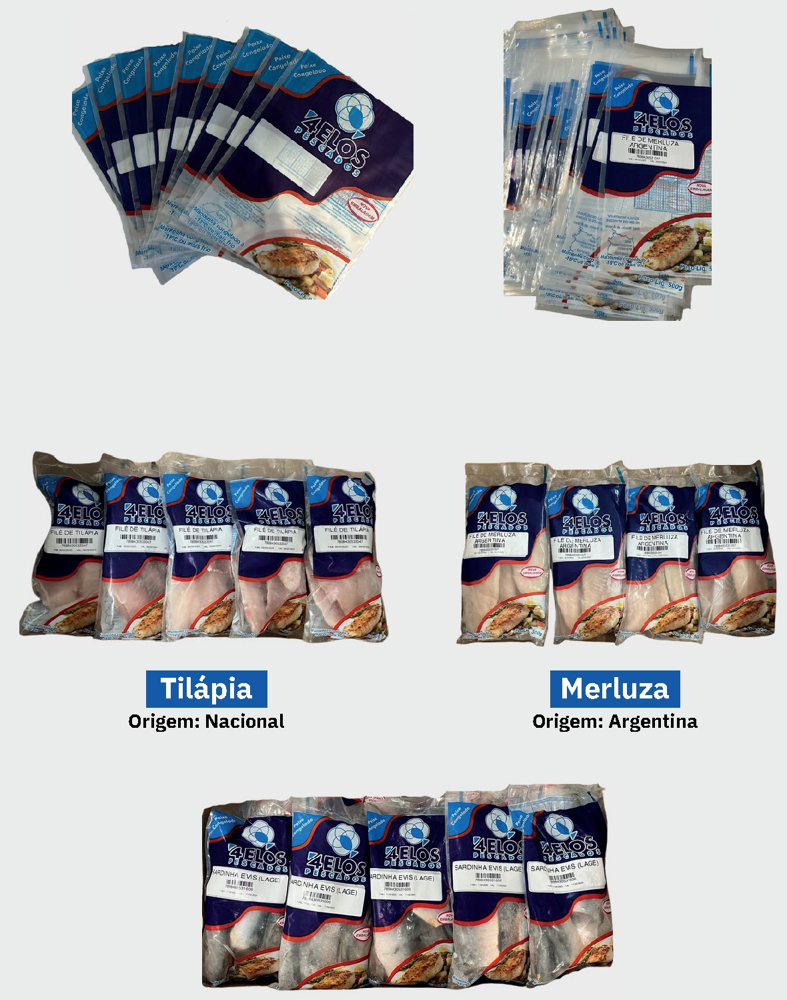
FALE CONOSCO